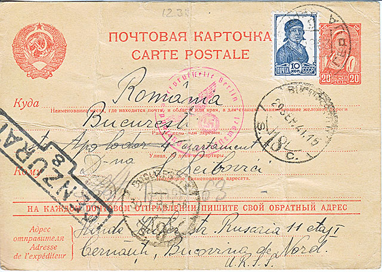
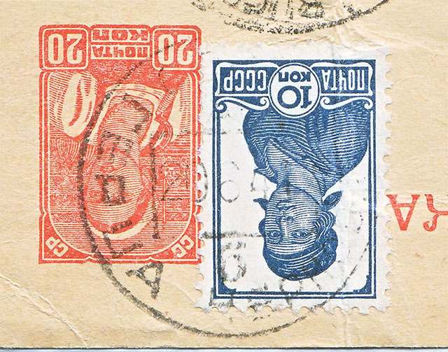
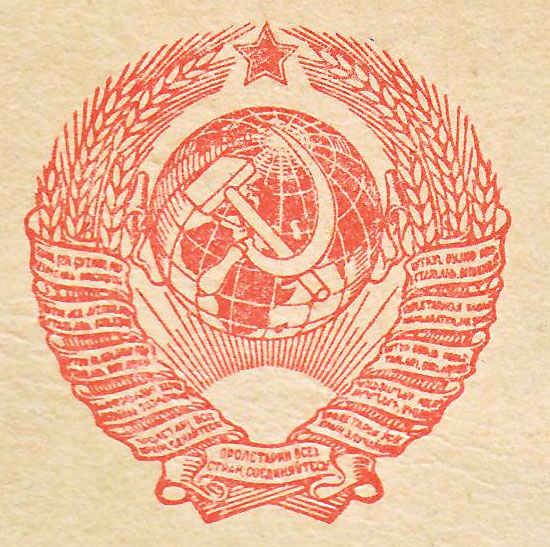
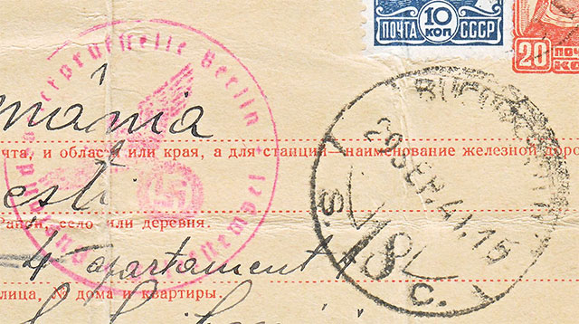

A family postcard from troubled times
Victor Manta
Introduction
In this World War II postal history article, I present to you the wandeing of a postcard, written and sent by my father 80 years ago, card currently found in my family's archives. The article is intended for those interested in the postal history of a territory called Northern Bukovina, which passed on June 28, 1940 from Romania to the USSR (following a Soviet ultimatum), then from the USSR to Romania since June 22, 1941, and then back to the USSR after the end of hostilities. Now Northern Bukovina is part of the Republic of Ukraine. See the Appendix 1.
Sending the postcard from the USSR. Its description
Let's start by showing this postcard. It appears in Fig. 1 below.

Fig. 1. Postcard USSR - Romania, 1941
It is a usual Soviet postcard, with a printed stamp of 20 kopecks and a usual perforate stamp of 10 kopecks, the total franking being 30 kopecks.
The two stamps are obliterated with a cancel dated "20 6 41", which means June 20, 1941. On the obliteration one can clearly read the locality where the stamping took place, namely Herţa (Hertsa, Герца in Russian) and, less clearly Chernovtsy (Черновцы), both written with Cyrillic characters. As we know, the Hertsa district was in the Chernovtsy (Russian) = Chernivtsi (Ukrainian) region.
I turned and enlarged the image, and present it, for increased visibility, in Fig. 2.

Fig. 2. The two postage stamps and their cancellation (with date and locality)
It should be noted, and it is important for the following, that this postcard came into the possession of the Soviet postal service just two days before the launch of the attack by German - Romanian troops on the territory of the USSR (June 22, 1941).
The destination address on the postcard, written in Latin characters (including the name of the destination country), is that of my aunt in Bucharest, Surica (Sally) Leibovici. I found the building on 4 Apolodor Street using Google Maps. It looks rather dilapidated, but I guess it looked better in 1941.
As the sender's address, my father put that of my (mother side) grandmother from Chernivtsi. The address is written in Latin characters, which I suppose should have facilitated the sending of the answer from Romania.
This banal Soviet postcard draws attention to the printed coat of arms of the USSR, representing typical symbols for Marxism, communist parties, or socialist states. It appears enlarged in Fig. 3. It is visible how the sickle and the hammer "occupy" not only the surface of the Soviet Union, but that of the entire globe.

Fig. 3. Coat of arms of the USSR
The rising sun and the inscription in Russian "Proletarians of all countries unite" appear at the bottom, and also on the bundles with the same text, written in different languages, that surround the crown of wheat ears.
German postal censorship stamp
This cancel is, of course, the most interesting element of this postcard. You can see it enlarged to the left of the images shown in Fig. 4.
At first, I was surprised by the mention of the city of Berlin on this stamp, which made me think that this postcard would have passed through the capital of the Third Reich, but this quickly turned to be wrong.
Here is what we learn from the excellent source 3. of the Annex (in my own translation from German):
"Verification centers (Prüfstellen).
It is planned to set up two verification centers - Berlin and Königsberg. (...) Other offices were later added only in the occupied territories. Therefore, those censorship ofices) were called Auslandsbriefpoststellen (ABP).”
Fig. 4. The stamp of German censorship office the stamp of arrival in Bucharest (Romania)
The verification centers were military offices abroad, but they kept the names of the originated centers in Germany, which is why Berlin appears on the stamp of censorship in Bukovina occupied by German and Romanian troops.
Source 3. in the Appendix allows us to easier discern what is written on the German censorship stamp:
- "Auslandsbriefprüfstelle Berlin" appears in the clockwise direction, in translation: Berlin Office for the Verification of Letters Abroad
- In the opposite sense we read "Briefstempel", meaning Letter Cancel.
From the fact that this postcard continued its journey to its destination we can deduce that it has successfully passed the censorship of the German censorship office.
Postal card's arrival in Bucharest, the capital of Romania
In Fig. 4, on the right, we see something almost incredible, but true, namely the stamp of arrival in Bucharest (18) of our hero. The stamp clearly shows 29Sep.41.15, i.e., the day of September 29, 1941, at 3 pm and, scrawled, the name of the city. Therefore, the postcard was on its way from East to West, in war conditions, for 102 days, or 3 months and 10 days. The distance between Hertsa and Bucharest is about 550 Km (340 miles).
During all this time, the German-Romanian troops, in their rapid advance in the opposite direction, arrived near Moscow, where they will be defeated and rejected.
My parents will take refuge, traveling standing in a very crowded freight train, and in addition bombed on the road, from the Chernivtsi region to the Uzbek SSR, at a distance over 4'000 Km (about 2'500 miles).
My grandmother, whose address was used on the postcard by my father, was pushed in the ghetto "reserved" by the new Romanian administration to the Jews of Chernivtsi and she must wore the obligatory yellow star in six corners.
On the postcard, the "CENZURAT = Censored" stamp of the Romanian military administration appears very clearly on the left. There is also a stamp Bucharest (9), dated 30, but the rest I was not able to decipher.
Continuation of the history of the postal card
I came into its possession after many, many years, when my family received it in Bucharest from my aunt Sally. Her correspondence with my father (her brother) was renewed only after the end of the war.
I remember myself occasionally adding a few personal lines to my father's letters to his sister. They usually started with the words, written in Romanian, but in Cyrillic characters: "Dear Aunt Sally, I haven't written to you in a long time, but I promise I'll write to you more often." I was about ten years old at the time and we were in Northern Bukovina, USSR. It seems like an eternity has passed since then.
New York City, USA, August 2021
Appendix
1. Romania in World War II. The war on the Eastern Front. Source.
2. The hammer and the sickle, the coat of arms of the USSR. Source
3. Horst Landsmann. Die Zensur von Zivilpost in Deutschland im 2. Weltkrieg. Source
Note. This article was published in the Summer edition of the US magazine "The Israel Philatelist."
Published: August 8, 2021 . Revised: August 7, 2023. |